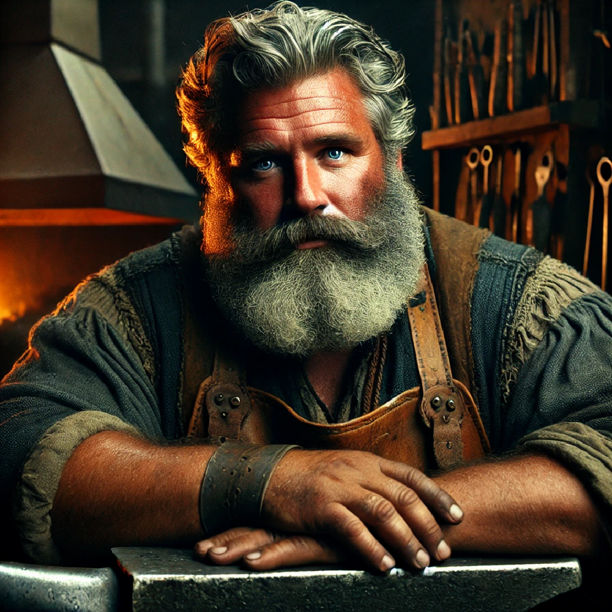
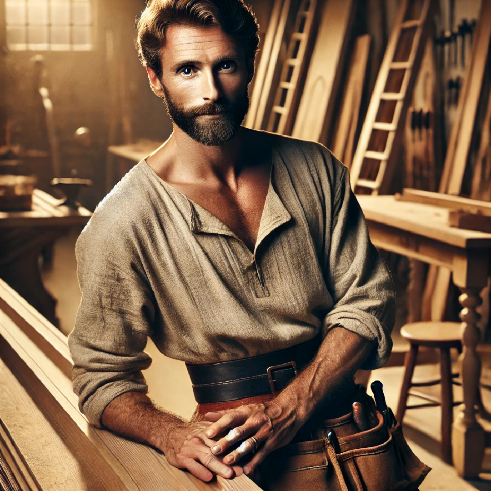

Welcome to the Guildhall – a gathering place for the hardworking artisans and craftsmen of our fair city. Here, guilds such as the Blacksmith’s, Carpenter’s, Mason’s, Tanner’s, Potter’s, and Brickmaker’s offer both fellowship and practical benefits.
The Blacksmith's Guild is the cornerstone of metalcraft in the city. Its roaring forges produce everything from sturdy tools to formidable weaponry. Members gain practical training in Smith’s Tools and may even craft or repair equipment at a favourable rate.
D&D 5e Note: Gain proficiency with Smith's Tools and enjoy discounted forging services.
| Portrait | Name & Title | Actions |
|---|---|---|
|  |
Buck Harding Master Blacksmith |
The Carpenter's Guild provides skilled hands for all manner of woodwork—from the construction of fine furniture to the repair of civic structures. Membership offers essential training and priority access to seasoned carpenters.
D&D 5e Note: Gain proficiency with Carpenter's Tools and benefit from reduced repair costs.
| Portrait | Name & Title | Actions |
|---|---|---|
|  |
Clinton Dean Master Carpenter |
The Mason's Guild oversees the stonework and structural integrity of our city. Its members are adept at shaping stone and brick, ensuring that every building stands strong.
D&D 5e Note: Gain proficiency with Mason's Tools and receive discounts on construction and repairs.
| Portrait | Name & Title | Actions |
|---|---|---|
|
Ferdinand Braun Master Mason |
Focused on the processing of hides and leathers, the Tanner's Guild ensures that raw skins are transformed into durable and versatile materials. Its members perfect the art of tanning with secret techniques and quality dyes.
D&D 5e Note: Gain proficiency with Leatherworking (Tanning) Tools and enjoy access to rare dyes.
| Portrait | Name & Title | Actions |
|---|---|---|
|
Dorothea Hauer Master Tanner |
The Potter's Guild is dedicated to the craft of ceramics. From humble earthenware to exquisite decorative pieces, its members transform clay into both utilitarian and beautiful objects.
D&D 5e Note: Gain proficiency with Potter's Tools and benefit from reduced costs on custom ceramics.
| Portrait | Name & Title | Actions |
|---|---|---|
|
Tessa Rae Master Potter |
Brickmakers provide the very building blocks of our city. Through precise craftsmanship and secret recipes, this guild ensures that bricks meet the highest standards of durability and beauty.
D&D 5e Note: Learn the art of bricklaying and receive discounts on construction materials.
| Portrait | Name & Title | Actions |
|---|---|---|
|
Aleksi Heikkinen Master Brickmaker |